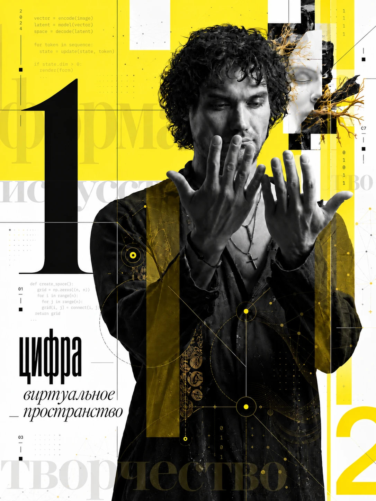

Вернуться к источнику
Попросить показать, откуда взялся каждый существенный вывод. Не считать красивое объяснение доказательством.
ИИ меняет не только скорость работы. Он сокращает расстояние между вопросом и возможностью его проверить. Но иногда уверенный ответ — самый опасный результат.

Представьте небольшую команду, которая придумала новый способ помочь людям выбрать культурные события. Чтобы проверить идею, ей нужны были исследование посетителей, работа с содержанием и цифровой инструмент. Даже первая проверка могла откладываться надолго.
Теперь ИИ может помочь быстро изучить исходные материалы, построить несколько конкурирующих объяснений и написать работающий прототип. Человеку не обязательно сразу заказывать большую разработку, чтобы узнать, имеет ли его мысль смысл.
Чтобы понять, что действительно меняется, пройдём через один вымышленный случай. Важно: далее нет выдуманной статистики реального бизнеса и нет скрытого ИИ, притворяющегося живым собеседником. Это наглядная лаборатория операций, которые можно выполнить с ИИ на настоящем материале.
У культурной площадки много разных событий. Организаторы замечают: посетителям трудно выбрать. Первый соблазн — сделать больше рекламы. Но что, если проблема совсем не в количестве анонсов?
Именно здесь ИИ может оказаться полезным: не придумать ответ, а сопоставить разные свидетельства, показать разрыв между ними и сформулировать, чего мы пока не знаем.
Нажмите на способы чтения. Материал один и тот же — но качество вывода меняется.
Звучит правдоподобно. Но из заданного материала это не следует: никто не сообщил, что не видел анонсы.
Уверенная формулировка подменяет отсутствие сведений готовым объяснением.
Работа с ИИ начинается не с просьбы «сделай вывод», а с требования показывать основания. Какие фразы действительно поддерживают утверждение? Что противоречит ему? Что могло бы его опровергнуть?
Предположим, мы знаем лишь то, что некоторым людям трудно выбрать событие. Этого недостаточно для большого решения. Но достаточно, чтобы поставить несколько разных гипотез — и придумать, как их различить.
Поменяйте гипотезу. Посмотрите, какие факты понадобятся и что могло бы заставить отказаться от первоначальной версии.
Увидели ли потенциальные посетители приглашение вообще? Не путать количество показов с пониманием предложения.
Показать один и тот же анонс новой сопоставимой аудитории, не меняя событие и условия участия.
Если приглашение заметили и поняли, а желание прийти не выросло — одного расширения охвата недостаточно.
Модель может построить альтернативы и контраргументы. Но она не видела ваших посетителей, если вы не дали ей проверяемые свидетельства. Поэтому ценность такого разговора — в следующем вопросе к реальности, а не в уверенной рекомендации.
Пусть гипотеза звучит так: человеку было бы проще выбирать события, если вместо длинной программы он получал короткий маршрут под свой интерес и свободное время.
Можно долго обсуждать такую систему. А можно с помощью ИИ быстро собрать небольшой интерфейс, открыть на телефоне и увидеть, понимает ли его другой человек.
Это настоящие переключатели. Поменяйте два условия — программа пересоберётся. Названия и расписание событий полностью вымышлены.
Все события вымышлены. Выбор делается по заданным правилам, без обращения к ИИ или реальному расписанию.
Прототип в этой статье — демонстрационный и полностью локальный. Ни одна персональная информация из переключателей не отправляется на сервер.
Особенно неприятная особенность новых систем в том, что рядом могут оказаться задачи, на которых они помогают, и задачи, на которых уверенно вводят в заблуждение.
В эксперименте с 758 консультантами Boston Consulting Group люди с GPT-4 выполняли подходящие для модели задания быстрее и качественнее. Но на другом задании, требовавшем тонкого сопоставления материалов, участники с ИИ чаще ошибались, чем контрольная группа.
Примерно на столько быстрее участники с GPT-4 выполняли подходящие задачи. В том же эксперименте они сделали больше заданий.
Доля правильных ответов в отдельной задаче: сначала контрольная группа без ИИ, затем две группы с GPT-4. Участники с ИИ справились хуже.
Исследование относится к конкретным заданиям, участникам и GPT-4 периода 2023 года. Эти цифры нельзя переносить на все современные модели и любую профессию. Обзор Harvard Business School · Разбор BCG.
В длительной практике исследований и прототипирования у нас особенно полезными оказались три простых требования. Это не готовые рецепты и не повод отдавать машине собственное решение.
Попросить показать, откуда взялся каждый существенный вывод. Не считать красивое объяснение доказательством.
Не просить ИИ соглашаться. Выяснить, какой факт или контрпример может разрушить удобную версию.
Открыть интерфейс, предъявить материал другому человеку, проверить неожиданное поведение. И вернуться к исходному вопросу.
В основе — не скорость производства материалов, а сохранение связи между вопросом, основанием, действием и последствиями.
Не начинайте с изучения десятка сервисов. Начните с трудности, которая уже существует в вашем деле. Выберите способ работы — и получите точное задание для первой пробы с ИИ.
Сегодня отдельному человеку доступно то, что ещё недавно требовало больших усилий: сопоставить материал, исследовать выбор, собрать пробу. Но способность построить результат не означает, что он нужен, полезен и верен.
Поэтому самый интересный вопрос не «что мне ещё поручить ИИ?», а «какое предположение о мире или о собственном деле я наконец могу проверить?»